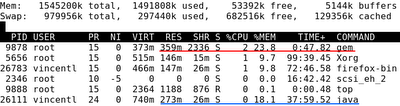

Update: This there is a solution for the slow rubygem problem now, please see Ways of Solving the Slow Gem Problem instead.
If there is a good example of bad software, Ruby's Gem package management system has to be it. I can't say how much irritation I've had every single time I had to do a gem installation, and I've really lost count of the times that I had given up waiting for it to complete execution.
It's incredible just how much memory that rubygem requires to work. I can't even use it on my laptop with 512M of memory, when if it's enough to run an entire operating system with all daily use applications, it should be enough for a package management system. But how very wrong I am! Rubygem uses so much memory that it swaps a gigantic amount of data into virtual memory, trashing my harddisk and driving my laptop into a state of near unresponsiveness. (Of course, that would have meant nothing if I was running Windows, but it's certainly nothing less of an amazing feat when it can bring down a Linux box.)
Perhaps it's time to start classifying rubygem as a DOS malware?
Since I couldn't get the bloody thing to run on my laptop to show you a measurement of how slow it is, I had to resort to using my higher-end desktop that has 1.5GB of RAM in it. Here's the result from the output from
'top':
{kind=link}
To help you understand how much of a memory hog rubygem is, I've underlined in red how much memory it's been consuming. If you take a glance at the row underlined in red, that indicates rubygem using up 359M of RAM, which is even more than a well-known memory-hog, Netbeans, which uses up 273M of RAM (underlined in blue, where Netbeans is shown as a single Java instance.) Also, as you see from the screenshot, besides being a memory hog, rubygem was 47 minutes in execution and it still hadn't completed installing the gem that I've instructed it to.
I'm certainly not the only person encountering problems with rubygem, and so far, there aren't any solutions in resolving the situation. Plenty of unhelpful advices I've been able to google up, which include things like updating rubygems (I already have, till the latest version of 1.1.1), and other discussions and solutions that just don't work[1][2].
To quote Charles Nutter, a core developer of JRuby:
"Even on a high-end box, it's so intolerably slow that there's got to be a key fault keeping the speed down."That observation was made in 2006. If you've noticed the result from his execution, it took rubygem 62 minutes to complete execution, not unlike what I've observed myself, but two years later. And that's just dismaying.
To put it simply, Rubygem is just a piece of rotten software - avoid using it like plague. If a package management system like Debian's Apt can deal with the entire ecosystem of Linux software packages without chewing up massive amount of computer resources to do it, it's certainly no excuse for a smaller universe of packages like Ruby to perform that much substantially worse.
References:
[1] gem install SUPER SLOW in linux virtual machine
[2] trouble with slow rubygems
5 comments:
What is it doing for those 62 minutes? It's extra annoying because there is no indication that it is even working. At least netbeans has a *loading* bar.
It's interesting because my memory usage is stuck at about 91% (same ratio as your results) while my CPU usage is consistently under 5%.
argh.
half way through 2009 and I still battling with this steaming turd.
I hate you rubygems.
The recent upgraded rubygems has taken this problem away (temporarily). If you're looking for a cure, read my updated post on the situation.
Ways of solving the slow gem install problem
just installing rails
January 2011
nothing has changed
July 2013
nothing has changed
on an 2.6GHz i5, 8G ram, ~40 gems, 200MB *.gem + uncompressed source, takes 11 minutes to install.
$ time bundle install
Installing i18n (0.6.4) from /Users/onetom/.rvm/gems/ruby-2.0.0-p247@******-sinatra/specifications/i18n-0.6.4.gemspec
Installing minitest (4.7.5) ...
Installing multi_json (1.7.7) ...
Installing atomic (1.1.10) ...
Installing thread_safe (0.1.0) ...
Installing tzinfo (0.3.37) ...
Installing activesupport (4.0.0) ...
Installing backports (3.3.3) ...
Installing builder (3.2.2) ...
Installing mime-types (1.23) ...
Installing mini_portile (0.5.0) ...
Installing nokogiri (1.6.0) ...
Installing rack (1.5.2) ...
Installing rack-test (0.6.2) ...
Installing xpath (2.0.0) ...
Installing capybara (2.1.0) ...
Installing diff-lcs (1.2.4) ...
Installing gherkin (2.12.0) ...
Installing cucumber (1.3.2) ...
Installing daemons (1.1.9) ...
Installing eventmachine (1.0.3) ...
Installing factory_girl (4.2.0) ...
Installing rack-flash3 (1.0.3) ...
Installing rack-protection (1.5.0) ...
Installing rspec-core (2.13.1) ...
Installing rspec-expectations (2.13.0) ...
Installing rspec-mocks (2.13.1) ...
Installing rspec (2.13.0) ...
Installing sequel (4.0.0) ...
Installing tilt (1.4.1) ...
Installing sinatra (1.4.3) ...
Installing sinatra-contrib (1.4.0) ...
Installing temple (0.6.5) ...
Installing slim (2.0.0) ...
Installing sqlite3 (1.3.7) ...
Installing thin (1.5.1) ...
Using bundler (1.3.5) from /Users/onetom/.rvm/gems/ruby-2.0.0-p247@global/specifications/bundler-1.3.5.gemspec
Your bundle is complete!
Use `bundle show [gemname]` to see where a bundled gem is installed.
...
real 11m55.920s
user 1m27.489s
sys 0m27.621s
$ du -hsc /Users/onetom/.rvm/gems/ruby-2.0.0-p247\@********-sinatra/*
52K /Users/onetom/.rvm/gems/ruby-2.0.0-p247@********-sinatra/bin
144K /Users/onetom/.rvm/gems/ruby-2.0.0-p247@********-sinatra/build_info
14M /Users/onetom/.rvm/gems/ruby-2.0.0-p247@********-sinatra/cache
0B /Users/onetom/.rvm/gems/ruby-2.0.0-p247@********-sinatra/doc
154M /Users/onetom/.rvm/gems/ruby-2.0.0-p247@********-sinatra/gems
200K /Users/onetom/.rvm/gems/ruby-2.0.0-p247@********-sinatra/specifications
168M total
Post a Comment